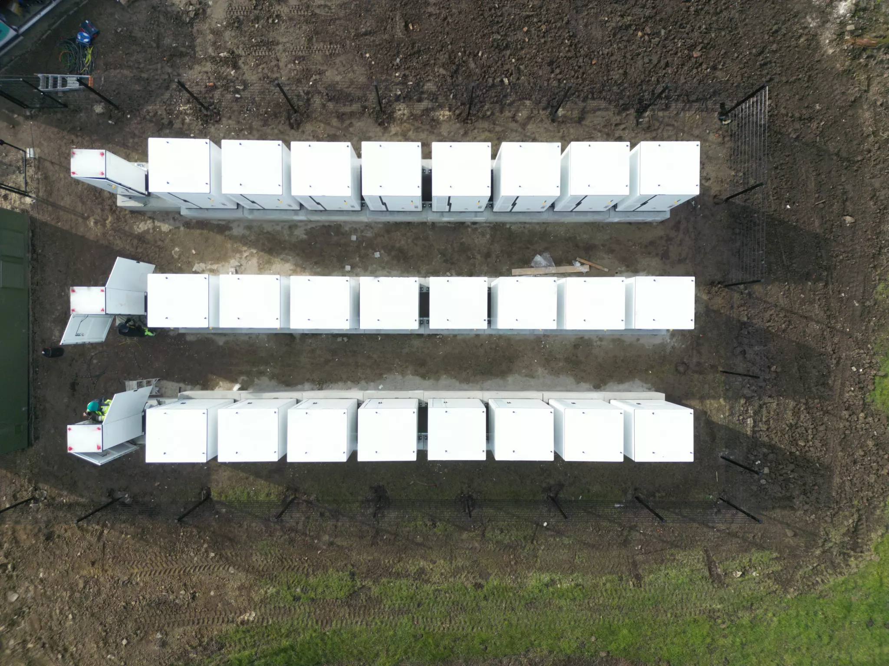
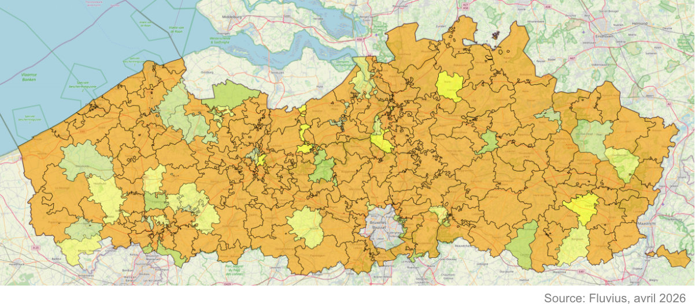

Le réseau électrique flamand est saturé. Mais cela ne signifie pas que votre projet doit attendre.

La transition énergétique est en plein essor. Voitures électriques, pompes à chaleur, chaudières électriques, datacenters, parcs de recharge et batteries industrielles : tous réclament un raccordement réseau plus puissant qu'il y a dix ans. Fluvius ne regarde pas seulement ce qui est connecté au réseau aujourd'hui, mais aussi ce qui est attendu à l'horizon 2035. Et cette projection révèle un problème dans un nombre croissant de zones : le poste de transformation de votre région ne dispose pas de capacité suffisante pour alimenter tout le monde aux heures de pointe.
Une nuance importante : il n'y a pas de pénurie d'électricité. Le problème réside dans la capacité de transport du réseau — la possibilité d'acheminer cette électricité au bon endroit, au bon moment. Le tableau officiel de Fluvius (au 30 avril 2026) illustre l'ampleur du problème : 883 demandes de raccordement flexible attendent encore une offre, 574 raccordements classiques sont dans la même situation, et 423 dossiers de batteries nécessitant une puissance contractuelle supplémentaire sont entièrement bloqués dans l'attente d'une modification réglementaire. Pour les ménages, rien ne change pour l'instant — cela concerne uniquement les puissances élevées et très élevées.
Qu'est-ce que le Fall-Back Flex ?
Le Fall-Back Flex est la solution temporaire que Fluvius met en œuvre pour permettre malgré tout le raccordement des entreprises dans les zones menacées de congestion. La logique est simple : plutôt que de dire « non », Fluvius dit « oui, mais à une condition ».
Vous obtenez le raccordement complet que vous avez demandé. Mais Fluvius se réserve le droit de vous demander de réduire temporairement votre puissance lors des moments de surcharge imminente. Ce signal passe par une armoire de télécontrôle — nous y reviendrons. En pratique, cela reste limité : uniquement lors des véritables pics, quand le réseau ne peut pas faire autrement.
En avril 2026, le Régulateur flamand des services publics (VNR) a assoupli les conditions du Fall-Back Flex. Auparavant, Fluvius devait pouvoir désigner un investissement réseau concret et immédiat pour chaque contrat flex. Cela s'est avéré être un goulot d'étranglement en pratique. Désormais, il suffit que cet investissement soit intégré dans les prochains plans d'investissement — ce qui permet à Fluvius de débloquer des centaines de dossiers en attente.
Quel est le piège ?
Le Fall-Back Flex n'est pas un contrat sans engagement. Vous accordez contractuellement à Fluvius le droit de piloter votre installation à distance. Pour les entreprises dont la demande énergétique est flexible — comme une batterie qui joue déjà sur les pics de consommation — c'est rarement un problème. Mais pour une entreprise industrielle dont les machines tournent à plein régime à ce moment précis, un signal de réduction peut avoir des conséquences opérationnelles. C'est quelque chose à bien évaluer en amont.
Par ailleurs, une obligation technique s'impose : pour recevoir et exécuter ce signal, votre installation doit être équipée de la télécontrôle.
Qu'est-ce que la télécontrôle — et qui paie ?
La télécontrôle est le système par lequel Fluvius peut surveiller et piloter à distance les grandes installations énergétiques. Elle est obligatoire pour les sources d'énergie décentralisées (DER) — parcs solaires, installations éoliennes, cogénération et batteries — à partir de 1 MVA. Une proposition est en cours pour abaisser ce seuil à 100 kW pour les batteries, afin de permettre le raccordement de davantage de projets BESS de manière neutre vis-à-vis de la congestion.
Le système se compose de deux éléments.
- L'armoire de télécontrôle (TCK) est fournie par Fluvius et installée sur votre site. Elle contient le module de communication propre à Fluvius et est directement reliée à leur système central de gestion du réseau. Fluvius fournit l'armoire, mais les frais d'installation et la connexion fibre sont à la charge du client.
- L'RTU client — également appelé contrôleur DER ou interface EMS — est à votre charge. C'est le contrôleur que vous installez comme interface entre l'armoire Fluvius et vos propres installations : la batterie, les onduleurs, les bornes de recharge. Sans ce contrôleur, l'armoire TCK de Fluvius ne peut rien faire. C'est aussi la partie techniquement complexe du dispositif, car ce contrôleur doit maîtriser les protocoles appropriés, traiter des points de consigne en temps réel et réagir correctement aux signaux de pilotage.
Exception : si Fluvius décide a posteriori d'imposer la télécontrôle à une installation existante, Fluvius prend en charge l'intégralité des coûts — tant l'armoire que les éventuelles adaptations de l'installation.
Qu'en est-il des projets de batteries en particulier ?
Les projets BESS (Battery Energy Storage Systems) constituent une catégorie à part chez Fluvius. Une batterie est en théorie un partenaire idéal pour le réseau : elle se charge quand il y a un surplus et restitue de l'énergie quand le réseau est sous tension. Mais dans le même temps, une batterie industrielle nécessite un raccordement réseau puissant pour pouvoir se charger — ce qui exerce à nouveau une pression sur la capacité de transport.
Fluvius traite donc les dossiers batteries séparément des raccordements d'entreprises classiques. Les chiffres officiels illustrent à quel point ce segment est bloqué : 423 dossiers de batteries nécessitant une puissance contractuelle supplémentaire attendent sans offre, faute d'un nouveau contrat de raccordement flexible. Pour les 106 dossiers de batteries avec flexibilité technique, ce contrat est en cours d'élaboration — Fluvius et le VNR négocient actuellement les conditions exactes. Une décision définitive est attendue dans le courant de 2026.
Et la FAO — de quoi s'agit-il exactement ?
Le Fall-Back Flex est un pont temporaire. Son successeur structurel s'appelle le Contrat de Raccordement Flexible (FAO). Le décret qui rend la FAO possible a été définitivement approuvé par le gouvernement flamand en octobre 2025. Quiconque signe aujourd'hui un contrat Fall-Back Flex sera automatiquement converti vers une FAO à terme.
Les règles d'application concrètes sont encore en cours d'élaboration. Un point d'attention soulevé par le secteur lui-même : les banques et les investisseurs souhaitent savoir à l'avance à quelle fréquence et dans quelles circonstances Fluvius peut limiter une installation, afin de calculer un scénario pessimiste pour le financement de projet. Tant que ces garanties ne sont pas fixées par écrit, le financement des grands projets BESS reste plus complexe.
La FAO ne s'applique que dans les zones de congestion, et uniquement pour les nouveaux raccordements ou les extensions de puissance supérieurs à 1 MVA. Elle est également toujours liée à un investissement réseau planifié : dès que cet investissement est réalisé, le raccordement flexible est converti en raccordement permanent.
Votre site se trouve-t-il dans une zone de congestion ?
Fluvius publie une carte de congestion mise à jour chaque mois. La carte indique par zone d'alimentation quelles possibilités de raccordement sont disponibles pour les puissances élevées et très élevées — du vert, où les raccordements permanents classiques restent possibles, à l'orange, où seuls les raccordements flexibles sont encore envisageables. Fluvius publie également les chiffres actualisés de tous les dossiers en cours. Le tableau d'avril 2026 illustre concrètement l'ampleur du problème : 883 demandes de raccordement flexible attendent encore une offre, et 423 dossiers de batteries avec puissance contractuelle supplémentaire sont entièrement bloqués dans l'attente d'une modification réglementaire. Ces chiffres sont mis à jour chaque mois.

Ce que vous pouvez faire dès maintenant : déposez votre demande de raccordement avec un dossier bien documenté — plus votre dossier est concret et complet, plus vite Fluvius pourra élaborer une solution sur mesure. Assurez-vous que votre installation est techniquement prête pour la télécontrôle, avec un contrôleur EMS qui maîtrise les protocoles appropriés et communique correctement avec l'armoire de télécontrôle Fluvius. Et comprenez ce qu'un contrat flex implique concrètement pour vos processus opérationnels, avant de signer.
La réglementation évolue rapidement. Ceux qui se préparent maintenant auront une longueur d'avance.
Powerland vous accompagne de la demande au raccordement
Chez Powerland, nous connaissons ce dossier de l'intérieur. Nous accompagnons les entreprises non seulement dans l'installation d'infrastructures de recharge, de stockage par batterie et de panneaux solaires — nous veillons également à ce que l'intégration technique avec le réseau Fluvius soit correcte. De la configuration EMS et l'interface de télécontrôle jusqu'à la coordination avec votre dossier de raccordement : nous prenons tout cela en charge.
Un seul partenaire pour tout — y compris ce qui se passe derrière le compteur et derrière le point de raccordement.
Votre projet nécessite un raccordement réseau puissant et vous souhaitez savoir ce que cela implique techniquement pour votre installation ? Nos experts vous guident du dossier de raccordement à l'installation opérationnelle.
Retour à l'aperçu{kind=link}